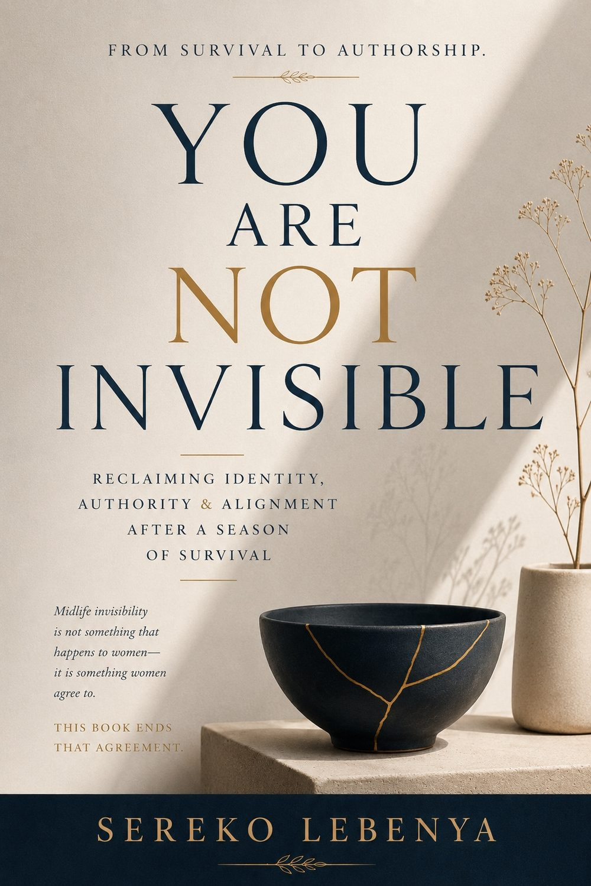

Published
You Are Not Invisible
For the woman who has felt overlooked, forgotten, or unseen — a quiet, honest account of what God sees when the world passes by.
About this bookI write because I have witnessed the faithfulness of God in an imperfect life.
— Sereko Lebenya
Not a newsletter. Not a broadcast. A personal letter from Sereko — written when there is something worth saying, and sent directly to you.
Sereko speaks from the same honesty that marks her writing. She brings to conferences, retreats, and literary events a voice that is quiet, direct, and unexpectedly moving.